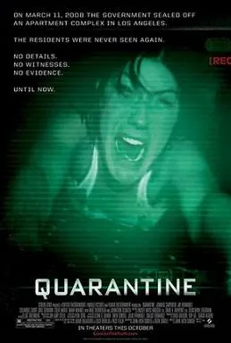

The genetics
The American remake of the Spanish film [REC] replaces the original's religious explanation with a man-made one. The infection that turns the building's residents into violent, rabid attackers is revealed in the final minutes to be the 'Armageddon virus', a highly contagious mutated form of rabies developed as a biological weapon in a military facility and stolen by a member of a doomsday cult, who has been experimenting with it in his attic flat. The military scientists who created it are never seen, and the CDC officials who enforce the quarantine are unable to contain the outbreak. The film thus belongs to the bioterrorism strand of outbreak horror, in which the danger comes from weapons laboratories and the people who steal from them; some critics regretted the need to explain at all. Real rabies spreads mainly through bites and takes weeks to develop, not minutes.
How genetics is portrayed
- Overall portrayal of genetics
- negative A military bioweapon stolen by a cultist causes an unstoppable massacre, and the film ends in total darkness.
- Outcome of the genetic intervention
- negative The stolen weapon turns almost all the building's residents, police and firefighters into killers, and no one is shown surviving.
- The doomsday-cult tenant
- villain Aim: ideological, malevolent (negative). A member of a doomsday cult breaks into a military facility, steals the mutated rabies weapon and experiments with it in his flat, starting the outbreak; he is revealed only through what he left behind.
- The military biological facility
- neutral Aim: military (negative). The 'Armageddon virus' was developed as a biological weapon in a military facility; its creators are mentioned only in newspaper clippings and are not characterised.
The story
Television reporter Angela Vidal and her cameraman Scott are filming a night shift with the Los Angeles Fire Department when firefighters are called to an apartment building where an elderly resident has been screaming. The woman attacks and bites a firefighter and a police officer, and those bitten soon become feverish and violent. The authorities and the Centers for Disease Control seal the building, trapping the residents inside; a resident who is a veterinarian likens the symptoms to rabies, and an inspector reveals that a sick dog belonging to a little girl prompted the quarantine. One by one the residents are bitten and turn, while a sniper kills anyone trying to escape. Fleeing into the attic flat, Angela and Scott find laboratory equipment and clippings showing that its tenant, a doomsday-cult member, stole a mutated rabies virus from a military biological facility. In the dark, an emaciated infected figure kills Scott and drags Angela away.